Author: NillerMedDild
Origin: Modpack Link
Presentation
Enigmatica 2 Expert is an elaborate Minecraft modpack with a push towards tech.
Important to specify that I finished playing it a year ago, and after some events lost the old walkthrough post along the previous blog place, so this is a retell of a recent story before it is lost to memory.
Overview
Garden of Eden
Thus starts the adventure in this world, my eyes lay on the surroundings, showing a peaceful apple orchard next to the sea.
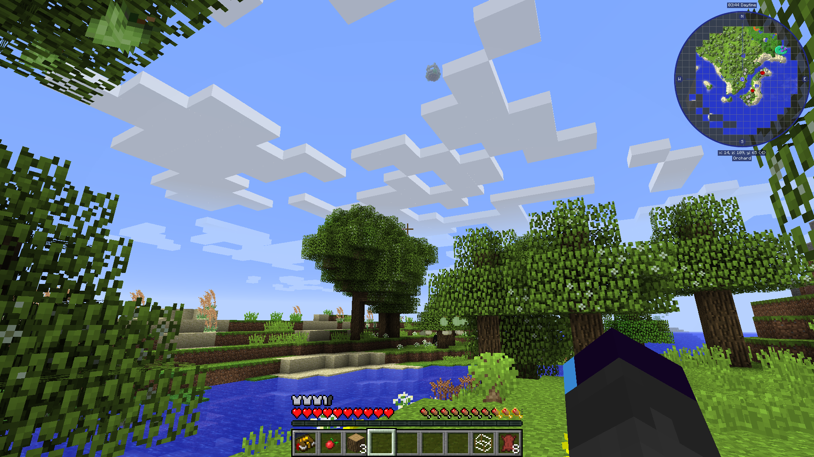
The most important goal right now is to quickly clear up space for a small camp, to prepare the base of operations. Gathering some flint from the nearby waterside, I obtained a full set of simple tools ready for use.
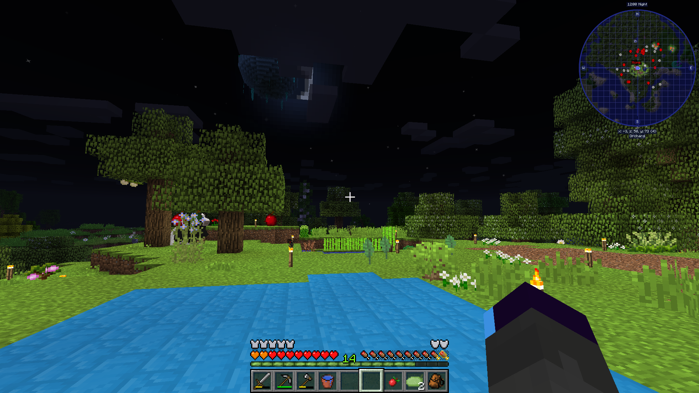
I quickly got to work and set up a basic smeltery to mold some metal parts and upgrade my tools. The mine goes deeper and I find more and more ores to various uses, even some diamonds!
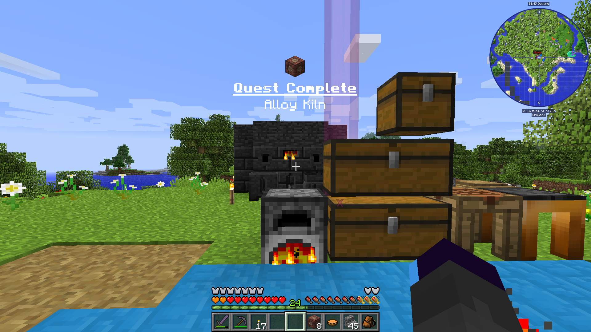
While digging, I find some vis crystals so I decide to spend more time in researching that field. Advances in technology progress fast on the side, with upgrade kits allowing me to open a portal to the nether and bringing the hell ores back.
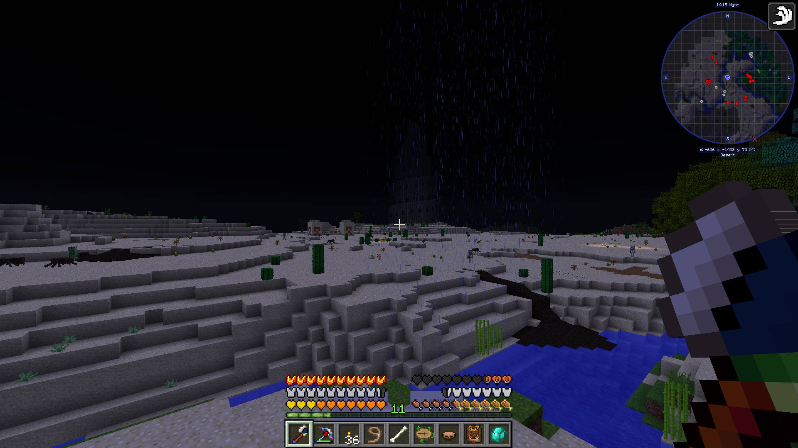
Power, Mysticism and Astrology
Exploration yielded several more materials needed to unlock gates leading to different mods. I can get started in several directions and get access to new machines, albeit not very efficient, for better ore production.
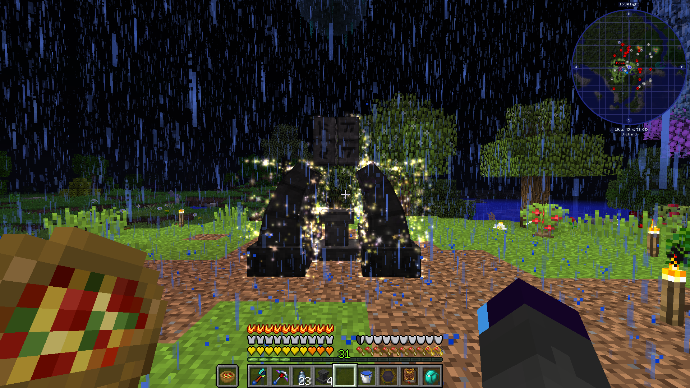
A small step for tech, a leap for magic. I setup a very simple mana production, then a great sky temple for the stars, and even a blood altar! With my few power means, I can produce some rubber and begin semi-automatizing some resources using pipes. Business is booming, I even get to make a mystical agriculture gem.
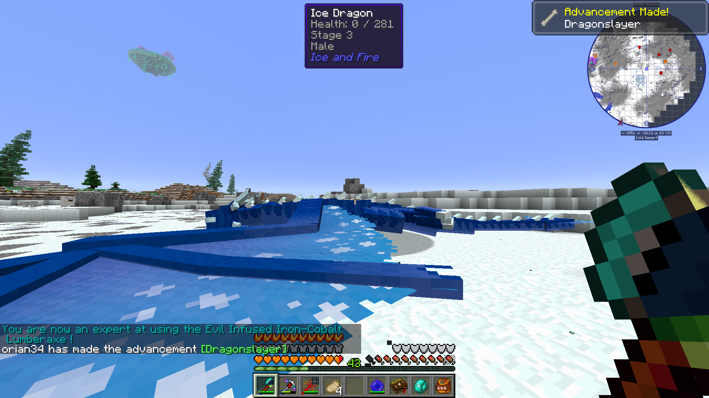
My expedition yielded some precious materials, and for the first time ever I learned how to use rituals! I use them to boost my crop growth to great effect, and I’m sure this will end up a major tool later on… Another trip to the nether and my blood altar receives a lot of upgrades, efficiency primes!
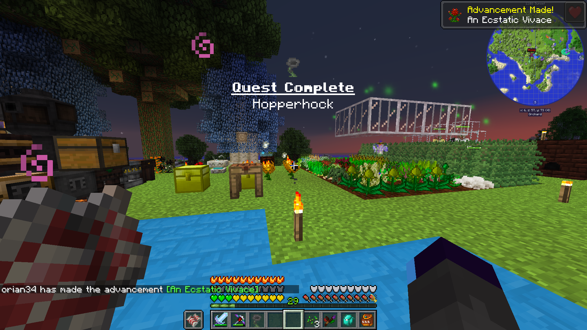
My first terrasteel made, I decide it’s the right time to setup a mob farm since I have all the tools available and a mob slaughter factory. I use a solar panel from a loot crate and it’s good enough to sustain it at this stage.
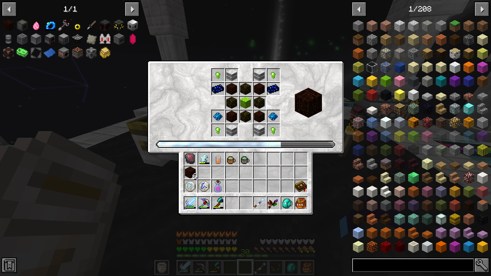
The End of Beginnings
All the required elements assembled, two portals could be opened, the most important one leading to the End. Having astral gateways is really handy, huh… With a slew of new materials available, I continue on my endeavors, with some risky experimentation and electrical upgrades.
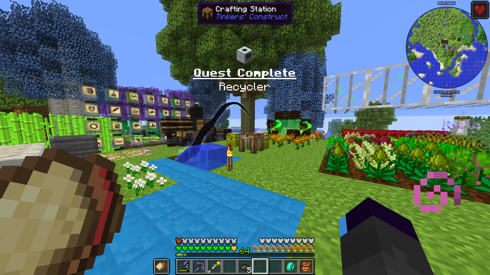
Being well advanced in magical matters, I look to the tech side for improvements. Getting better machines means the power grid is taking a hit, and I’ll admit I never was a great energy supplier. Scraping by so far, I get a major machine that will matter(haha) for the rest of the pack: the matter fabricator. The duplicating fluid producer…
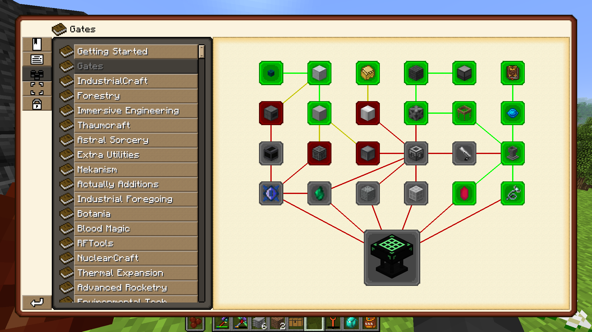
With so many options, I have a lot of work of setup to start making use of all the new means of production. I get smarter and use a power cell as buffer during the day for another solar panel to keep powering the night. The replicator is installed and while the amount of fluid is a bit low, the option to duplicate specific items is appearing!
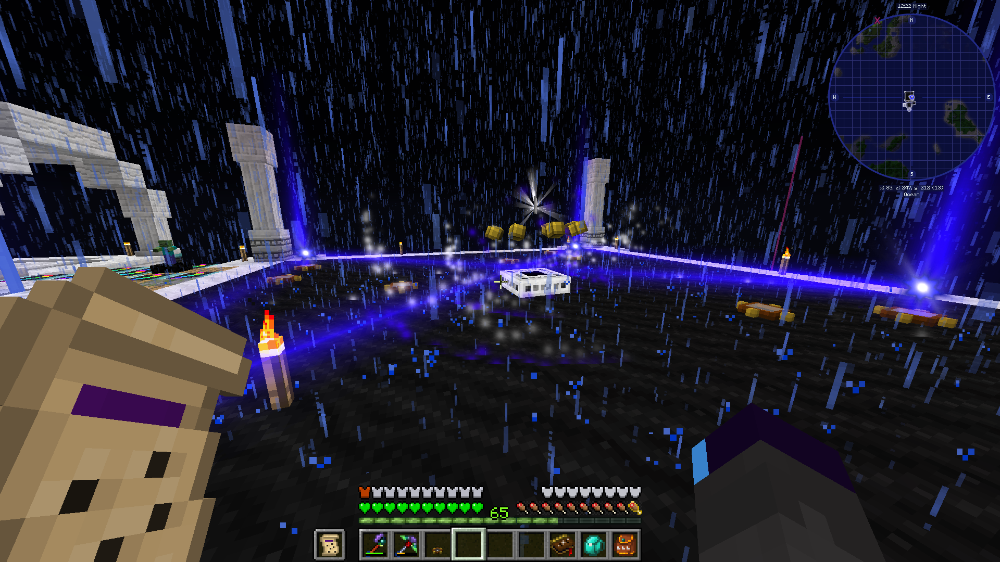
My power explodes after obtaining some RTGs(some sort of self-generator) and production goes full throttle. This is the first time I feel so liberated from power constraints, and quests are unbridled, downing them by the dozen. The industrial revolution is coming!
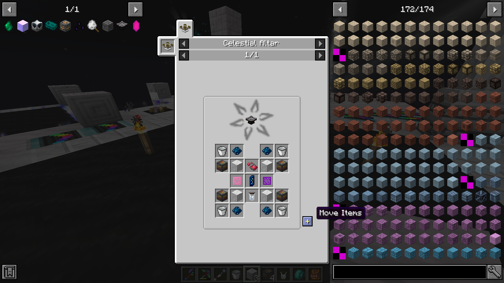
On the Matter of Machines
The UU-Matter(duplicating fluid) is being produced much faster now, and a good amount of the complex casings can be replicated, allowing me to bypass recipes after the first time. I even started making my own uranium RTGs to have self-powered machines more spread out and almost all of the gates are opened!
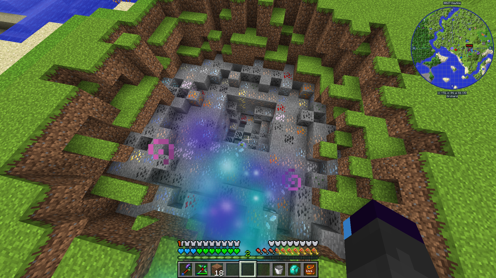
All this free ore definitively solves resource shortage aside some exceptions, and the biggest change is on the horizon. I finally make an ME Controller, no more slog through chests, it’s disk storage time(although I’m still very new to it)! I tried various ways to produce more power but they all ended up severely disappointing… I’ll stay with my RTGs.
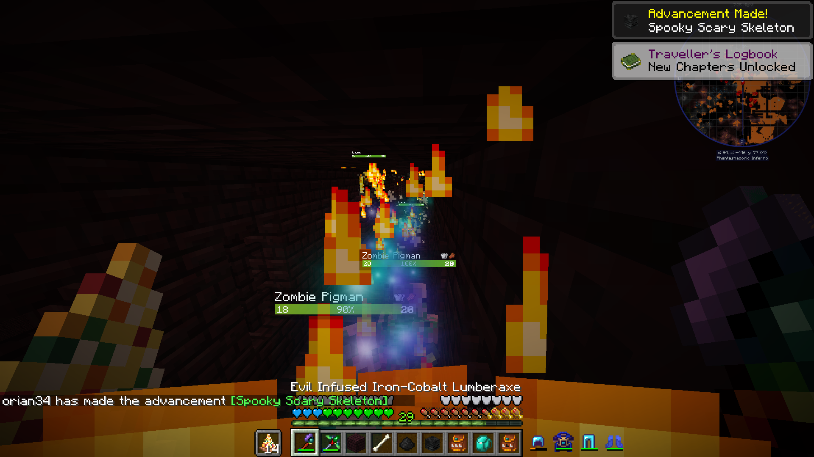
Despite the poor attempts, the power generated is still worthy of use, and I install garden cloches for the mystical seeds as well as a laser miner for more ores. Seeing how spread out everything begins to be, I make use of draconic power crystals to bypass the need of power conduits. Veeery handy!
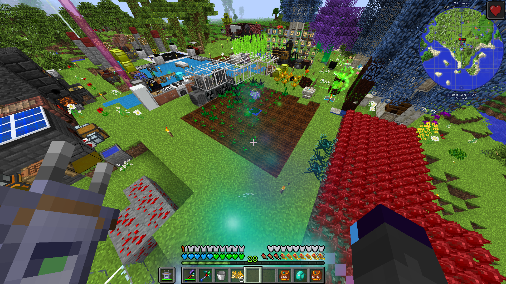
I crafted a radar that was originally made for ore detection, but I went a step above and tuned it to detect chests. With this, I can easily find out dragon dens from the amount of chests showing up, it’s time to be rich! This yields a tremendous amount of resources for better RTGs and most importantly, dragon eggs! This will be handy for forging dragonsteel.
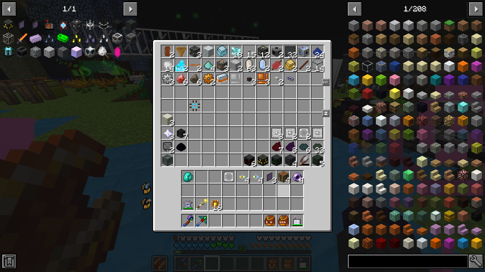
Digital Era
I’ve gotten more confident in my refined storage usage, and now that I can access wirelessly my crafting interface, I truly changed the paradigm. I begin by linking all my production using an enderchest network and assemble a ridiculously strong dragonsteel sword with many enchantments on it. Poor wither has become a punching bag…
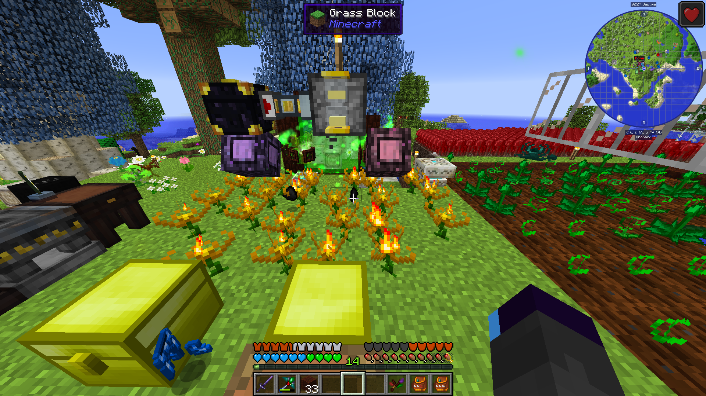
Growing, growing, the tree of life is growing. I’ve received some advice on how to utilize better my storage system, for the fabled autocrafting! So I began growing my crafting tree of life… I’ve been told interfaces were everything with this version, and spoiler, it was correct. First step of autocrafting, install a way to autocraft the materials needed to expand the autocrafting.
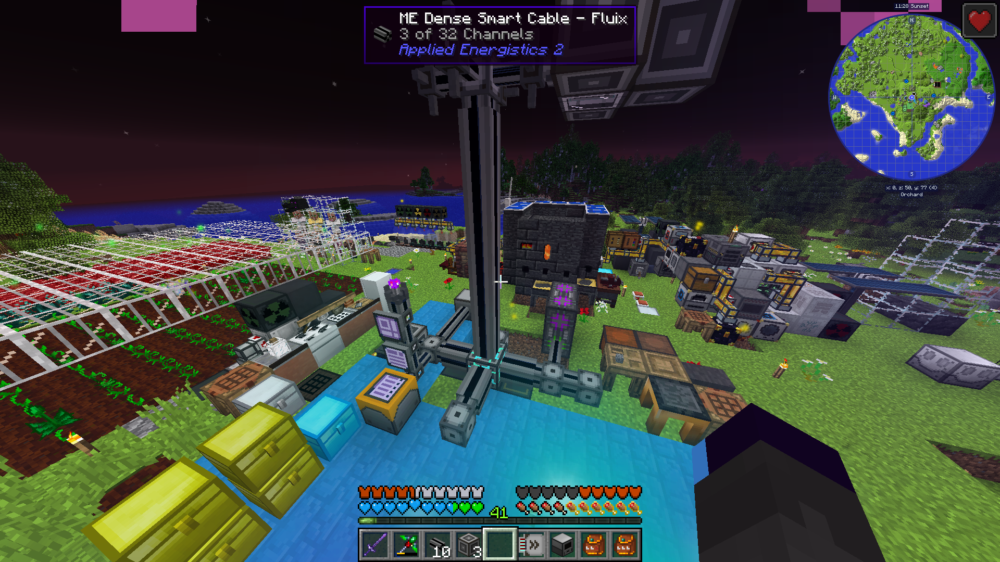
After crushing the enhanced guardian of gaia, I begin the great renovation in the basement, with a lot of self sufficient machines that run by themselves for autocrafting. All these resources will be at a click’s reach! As my tree expands, I become needy of more power once again, pushing me to look into reactors and other cheap ways.
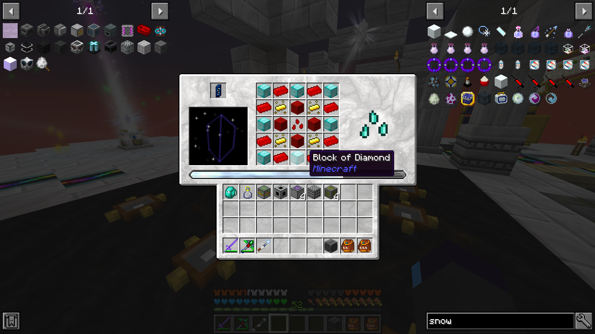
I line up RTGs above my garden cloches and set up a melon farm to produce ethylene and power a turbine generator. The production is self sufficient, and for once the effort was worth it because wowie the output is delicious. The more turbines I’ll add, the more power generated, it can keep on growing! I found the solution to my energy problems definitively this time.
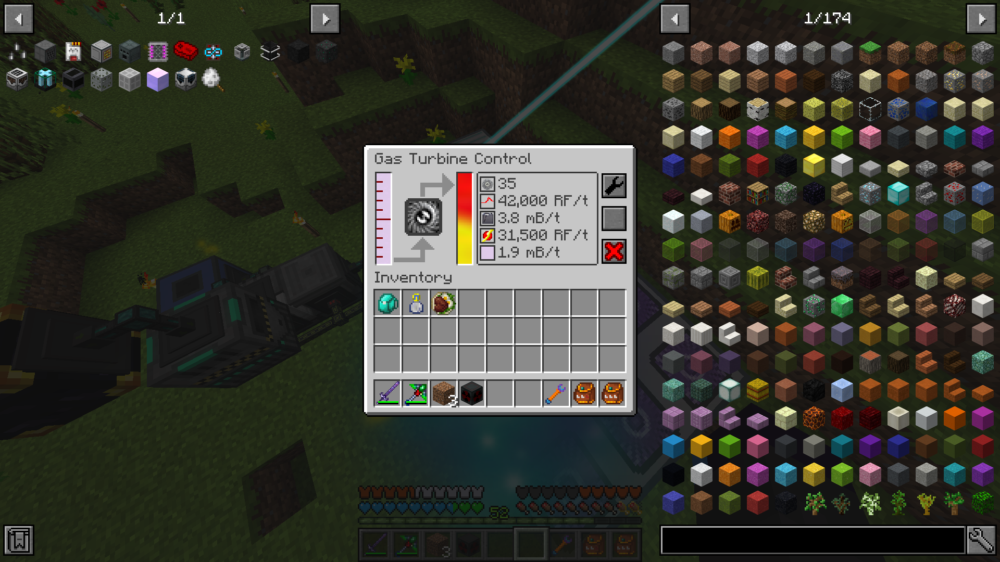
Breaking Down Rules
With the efficiency of the dragon crystals, transmitting power to everything is child’s play, and I can even grow my crafting tree of life along the garden cloches. Everything has become easy to power and I don’t have to fear an outage. Since I can afford it now, I build an arc furnace next to my mob farm to melt all the useless gear pieces dropped to add some extra materials to my stash.
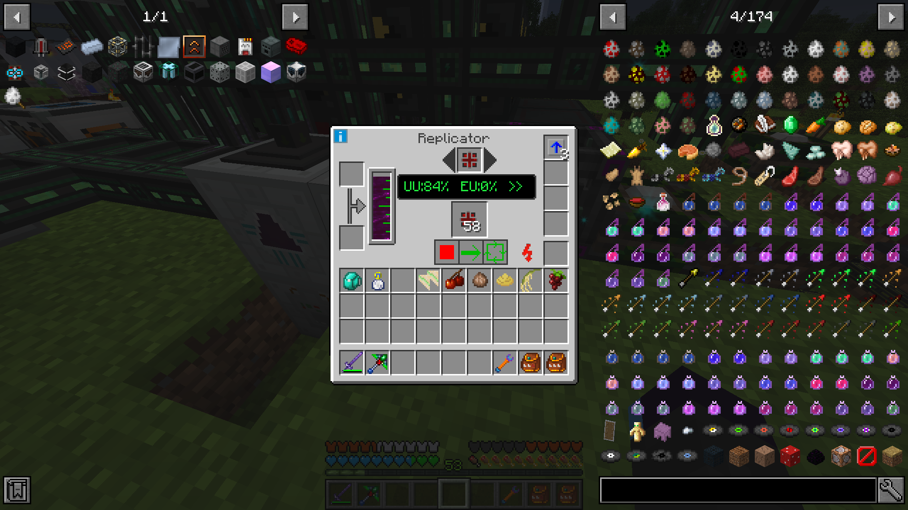
Everything is easy to power and make now, so I install a void miner to have it function on the side, because they always take forever to go up tiers. The roots of my tree keep expanding as more autocrafting takes place with new machines.
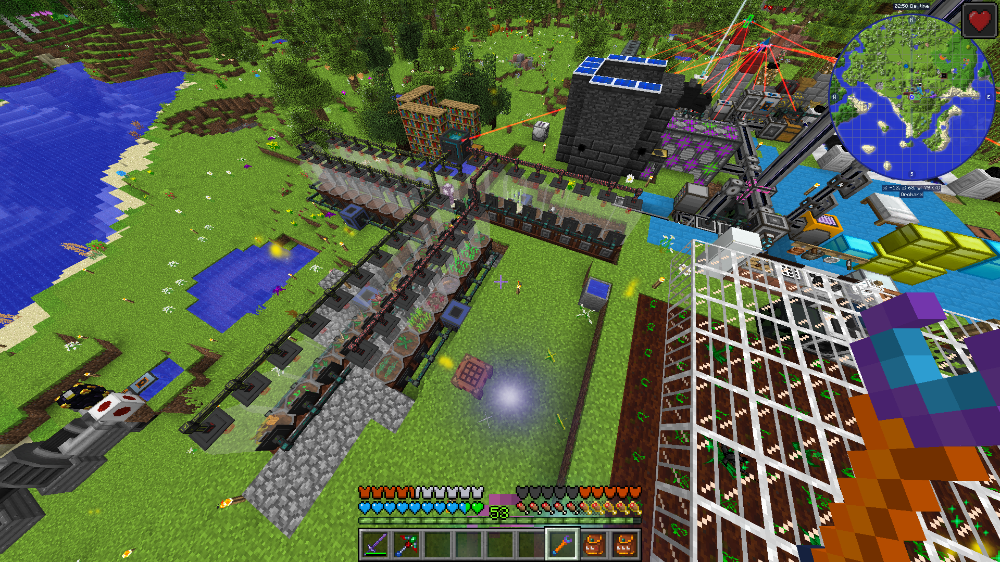
Progress goes by leaps and bounds, and there’s even machines to automate crafting from thaumcraft and astral sorcery! How wonderful, I’m living the dream currently. I also upgraded the void miner and found a secret page to explain what the corrupted version of the Horologium ritual does… this will be useful, I can sense it.
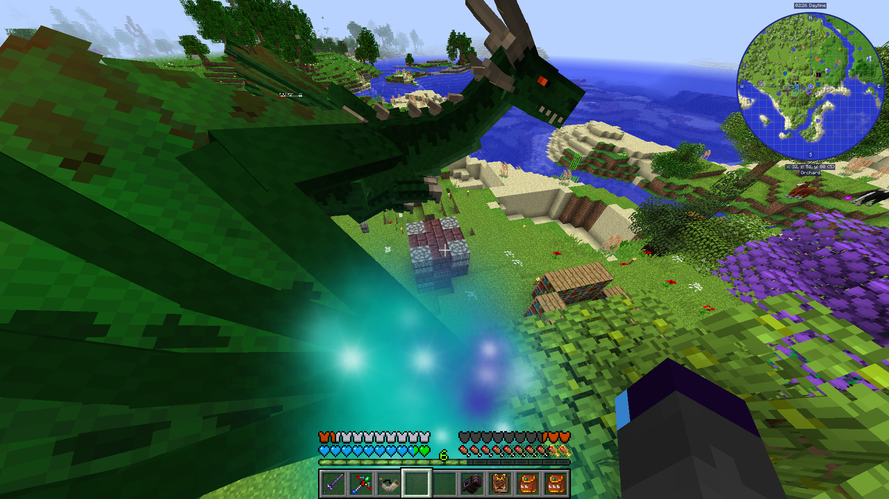
I quickly go through the twilight forest progression to defeat the Ur-Ghast and… Did I mention I love this mod? It’s my favorite dimension mod for years now, and it’s always a pleasure to go through it, even while being overpowered. Anyway, I need a ton of void seeds, so it’s time to corrupt the plane of existence… Thankfully I have the means to make it more efficient now.
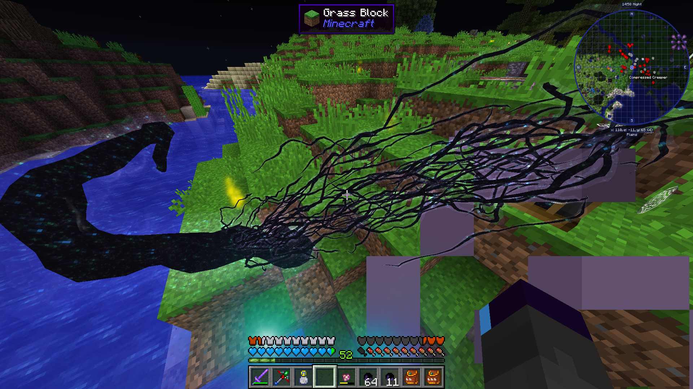
To Infinity and Beyond
While finally being able to craft better platings for nuclear machines and RTGs, a massive corruption outbreak happens not too far from my mob farm, oh dear… Thankfully it doesn’t expand too much and stays fairly contained, as long as I regularly kill the abominations popping up. Meanwhile I place down an excavator to obtain bauxite, as that’s the only known way to obtain it and make ender IO casings.
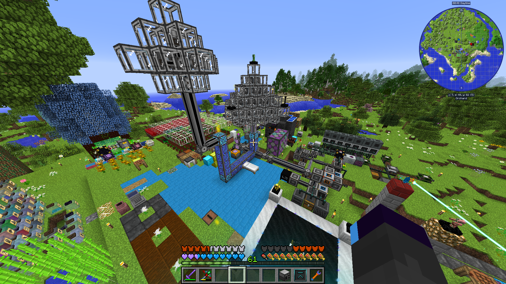
I probably forgot to mention it, but at some point I added more ethylene generators. You don’t change a winning formula! I needed the power to keep expanding with all the new machines, especially since I’ll be preparing a rocket soon. You can’t skimp out on resources for this.
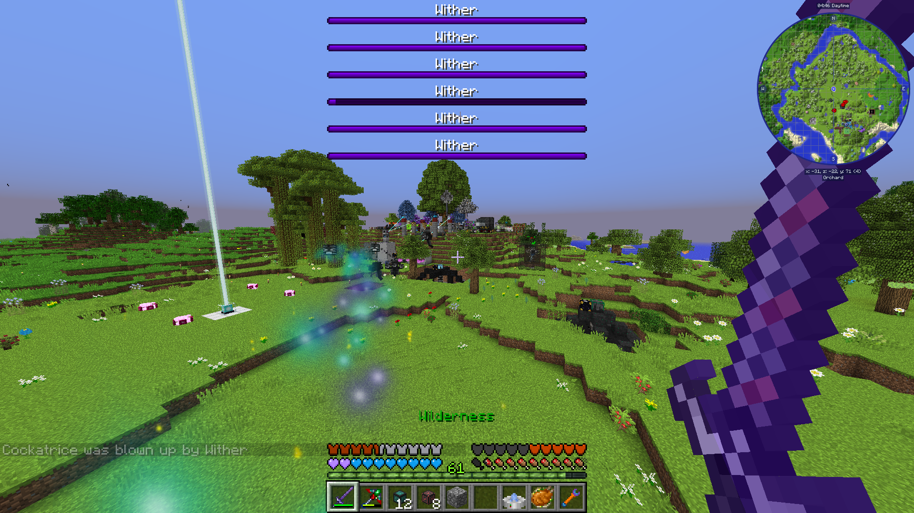
The big machines are getting expansive, but thankfully my autocrafting system is keeping up and I’m never on the backfoot. I even added a special space floor to get in the mood and refill with oxygen. A tower later and my rocket is filled, it’s adventure time!
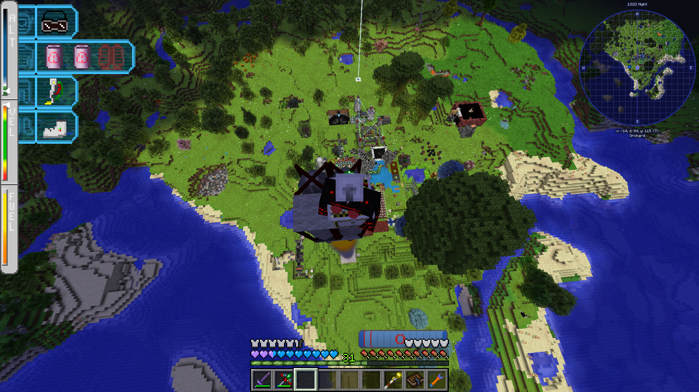
Although I totally didn’t forget to first send a base into space… and use a homing system so the rocket comes back… Ok, truth is I had to make another rocket. Anyway, the new planets have what I needed, and some extras! This allows me to begin building some extreme reactors and eye the draconic evolution things.
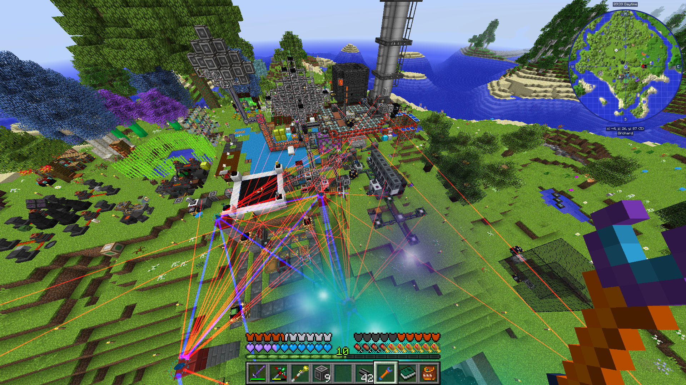
Going Big
It’s a bit difficult, but I understand how to have autocrafting work on the extended crafting tables. After all, this is going to be a necessity for all the late game stuff. I start looking into the needed materials to make machine chassis, needed for the last tier of ender IO machines.
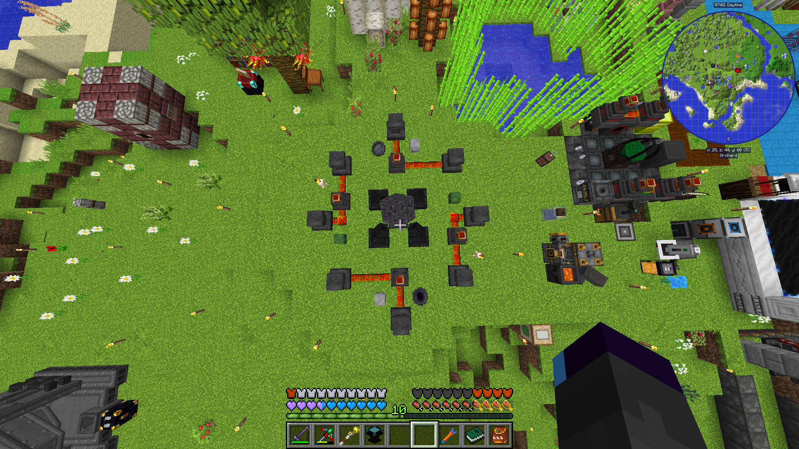
I know the pain will be unavoidable, the singularities will be unavoidable, I don’t have a choice but to set it up now instead of later… While it runs on its own, I work hard on crafting costly elements. To that goal, I even added another mob room with a powered spawner for specific drops farming.
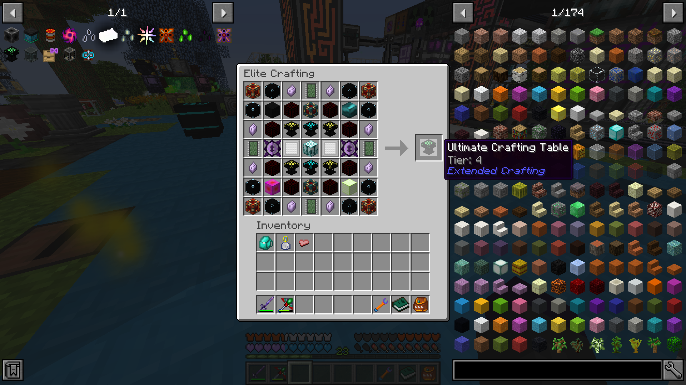
Through toil and trouble, the fusion crafting core is ready for use, the final crafting tiers have been reached… Almost. Using some redstone for safety heatlock, a stronger and better nuclear reactor helps power surging for the huge power demand of fusion crafting. The moment has come to progress in draconic evolution, and I heard horror stories about it…
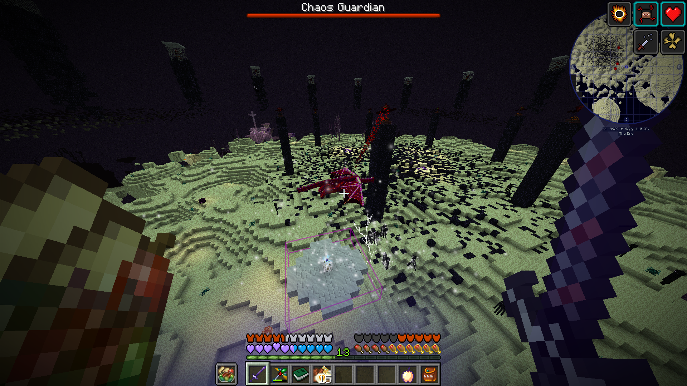
Thankfully, I don’t have to rematch against it ever again in this pack, because the shard dropped is replicable, muahahaha! Upgrading my fusion crafting is child’s play now. This opens another final tier production, the neutron collector. And oh dear is this slow…
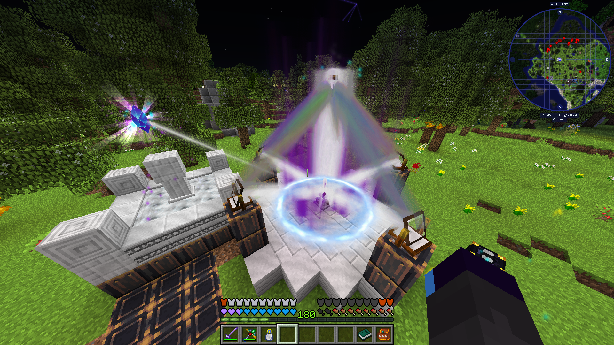
Going Home
A daunting task suddenly stops me in my tracks, I have to make a fusion core reactor and it seems incredibly obtuse and annoying. After pain, sweat, and tears, I manage to make it work without issues, but my past self was right I don’t like it. The oh-so-precious neutron fluid in my possession, the ultimate ingots ready, I’m only a few steps away from the creative tank. The necessary first step to break the endgame.
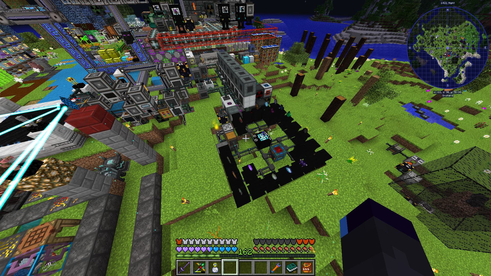
The tank here, the neutron fluid is now a joke that I can infinitely produce, hah! Any fluid in my possession can be freely duplicated effortlessly, this will be a huge help for making the singularities.
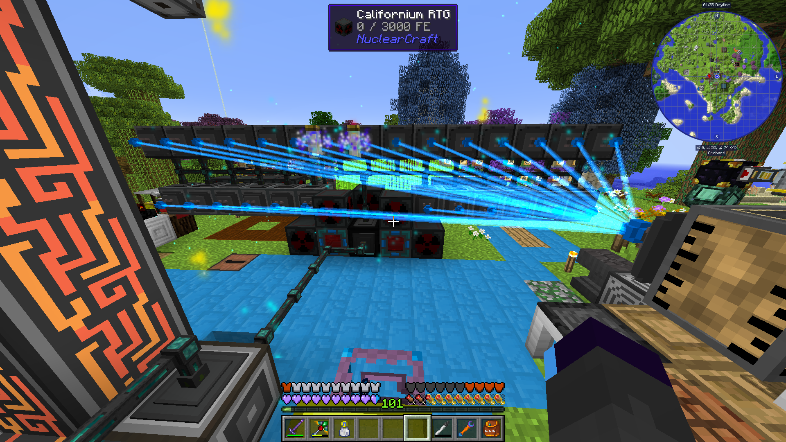
More singularities, more! Hahahahaha, hahaha, hahahahahahaaaa… AAAAAAAH! To avoid becoming insane, I clear out all the remaining quests in all the stages I haven’t yet completed. This is the last sliver of sanity I can preserve. All these efforts leading to making more ultimate singularities and the remaining elements…
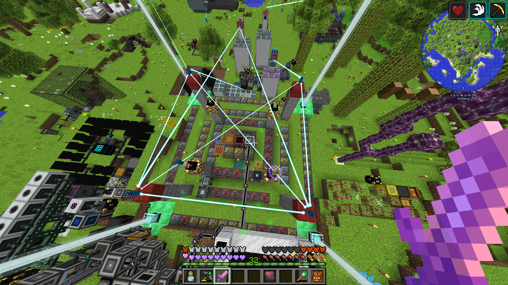
Everything culminates to make the ultimate ingot… which can be duplicated using the tank! This huge step done, I can fairly easy make the creative power cell for infinite RF, and making the creative gas tank is simple too. Then the final step, after major lag to autocraft the tier 6 solar generators, the creative vending upgrade, which allows duplicating items without restrictions. The pack is basically over at this point!
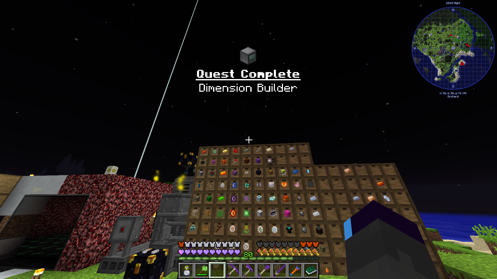
Conclusion
This is it then, I’ll be honest, I didn’t remember every twist and turn but hopefully this retelling was accurate enough to be enjoyable.
It was tough while keeping the grind fair(for an expert pack), and it made good use of the various mods, having the recipes interconnected to progress.
I had fun and I’ll be seeing you in another world!
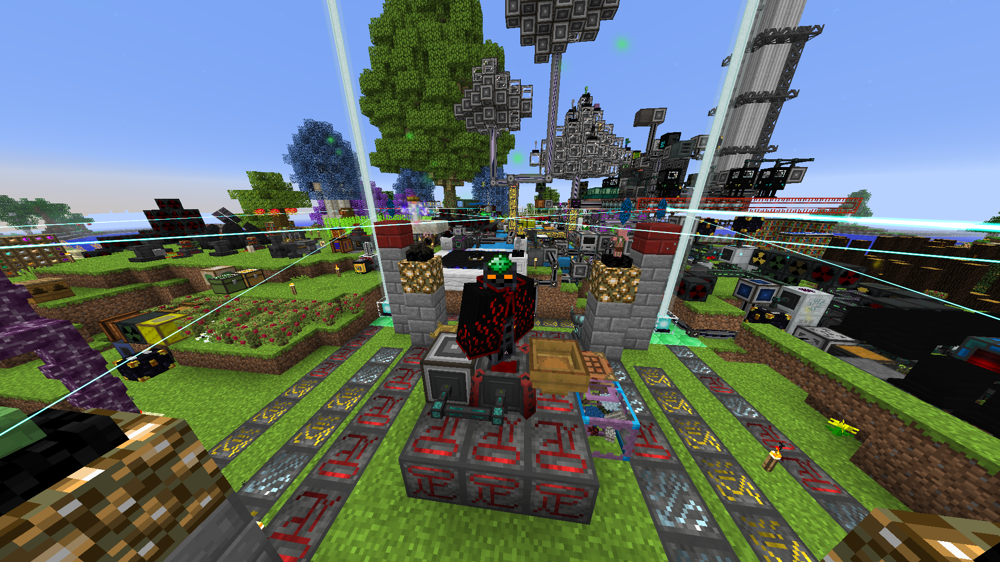